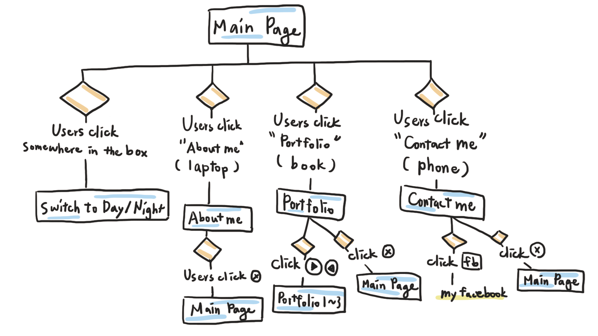

互動式圖像履歷

這是我在 2019 年 1 月初時完成的作品，希望呈現的是一個用戶能自己探索的桌面，透過點擊畫面中的東西，可以發現電腦代表的是我的簡歷，書本代表我的作品，手機則代表聯絡資訊；就算只是亂點，畫面也會出現白天／黑夜的切換，增加整體的互動性與美觀性。
會做這樣的設計是因為我希望能打破大家對履歷網站一成不變的既定印象，讓大家在看我的網站時，就像在看一幅畫，並享受發掘資訊的感覺。
這個網站的靈感來自於我自己心目中的理想桌面，在腦中大致想好網站的呈現方式後，畫圖釐清網站的流程，接著就用 Adobe Illustrator 著手進行視覺素材的繪製。
繪製完後，就開始根據網站流程撰寫 HTML、CSS、JQuery 的程式，因為是第一次做完整的網頁，在製作時遇過許多問題，最後都靠網路上的免費資源一一解決。我想只要有心，Google、知乎、Facebook 社團、Medium 都能找到很好的學習資源，只要肯花時間，一定能獲得解答並完成目標！